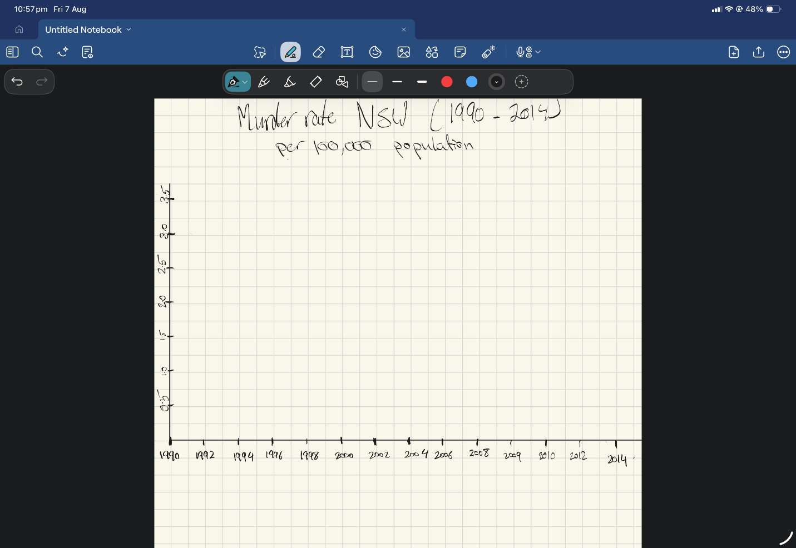
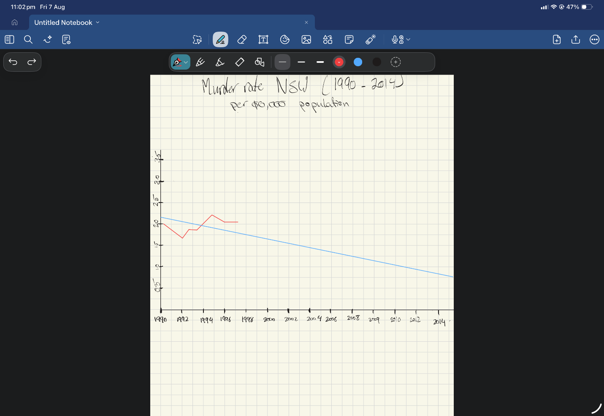
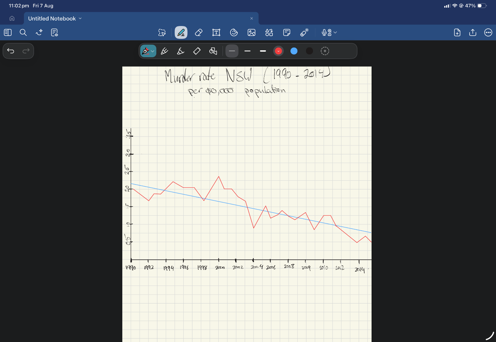
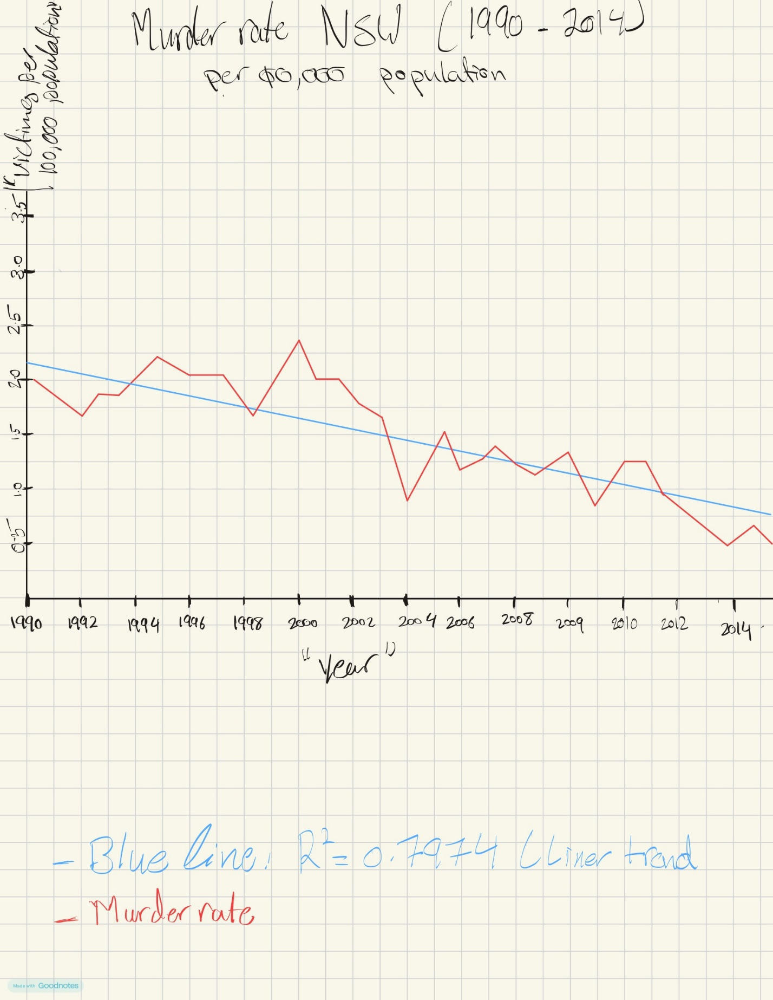
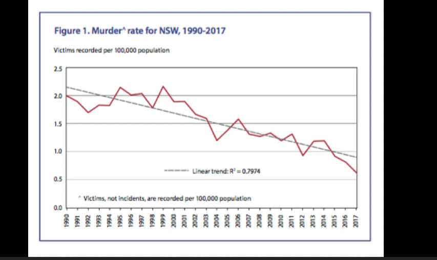

Draw it like Playfair, Minard and Nightingale
About this piece
I chose to replicate this chart because it had a clear downward trend or the data was simple enough to redraw by hand accurately. It shows the murder rate in NSW from 1990 to 2014, and I picked it because I wanted practice plotting a real declining trend or crime statistics interested me more than other topics I found.
The process
Drawn by hand in GoodNotes on iPad with Apple Pencil, working from graph paper templates.





Final visualisation

Reflection
Redrawing the graph of murder rate of NSW using hand has revealed the mechanics of achieving visual accuracy in drawing. Even though I was able to spot a typing error in the axis label in the process of drawing ($0,000 to 100,000 population) and could successfully replicate the linear trendline from the original graph, the free-hand nature of the drawing led to some line irregularities and difficulty in ensuring even spacing of the 28 years in the x-axis. Given some time, I would have ensured that the horizontal scale is drawn on a grid paper and use a straight edge ruler prior to drawing the axes.
Original visualisation

Reference
Sydney Criminal Lawyers. (2022, December 20). All NSW crime categories are in decline, except one. https://www.sydneycriminallawyers.com.au/blog/all-nsw-crime-categories-are-in-decline-except-one/